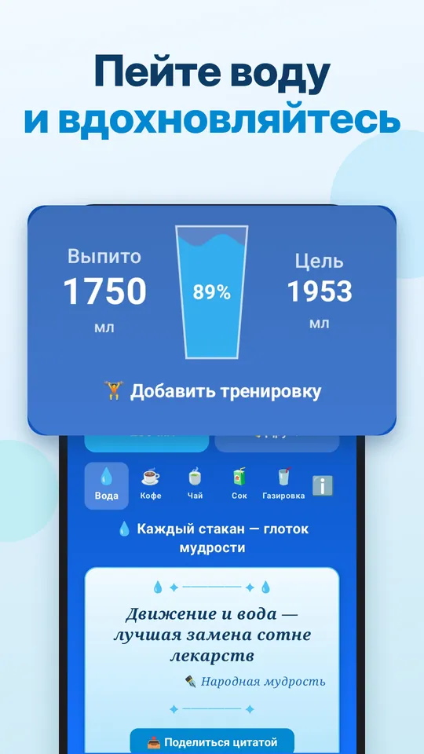
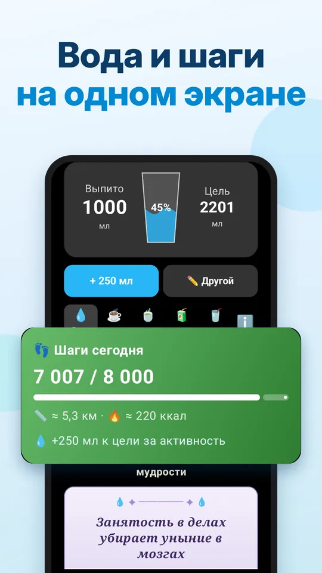
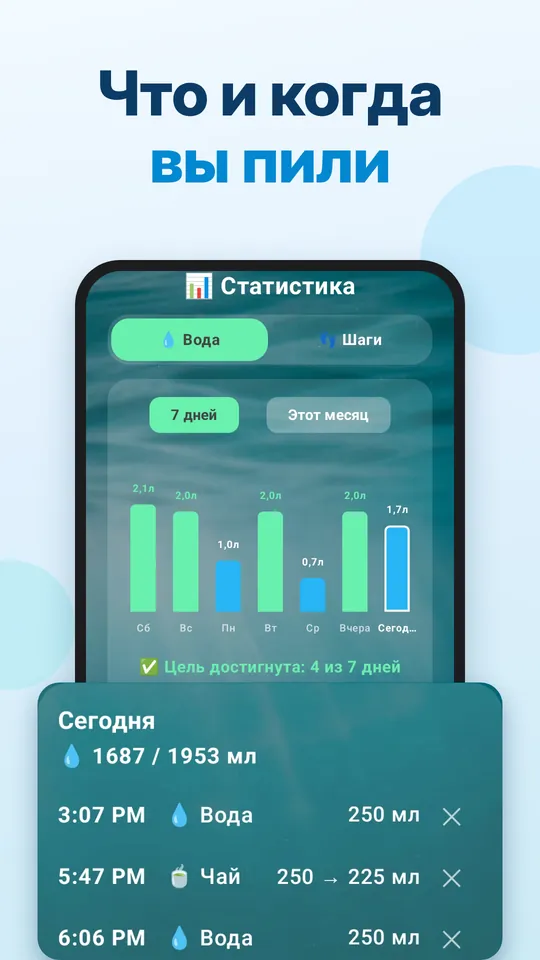
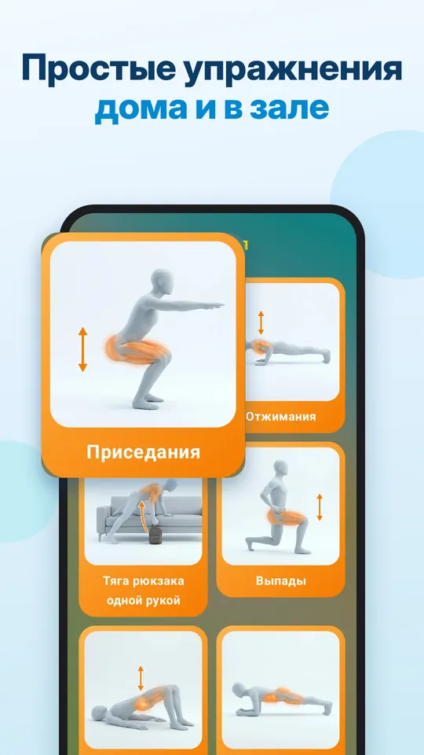
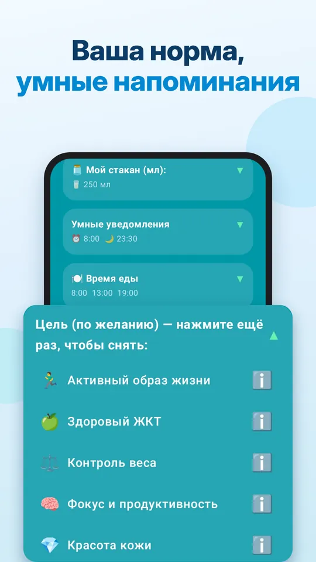
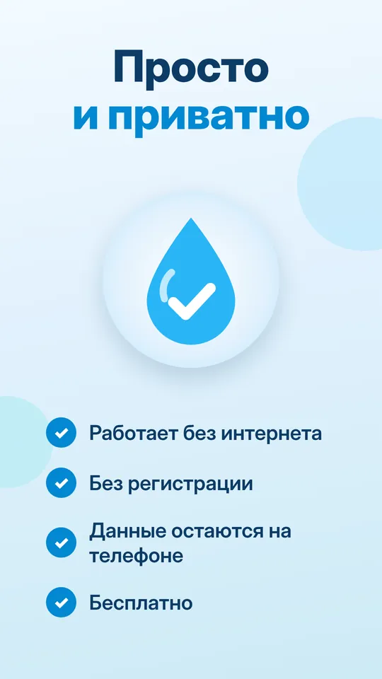

Water Wisdom
Пейте воду вовремя.
Живите мудро.
Water Wisdom напоминает пить воду, рассчитывает вашу личную дневную норму и дарит за каждый стакан короткую мудрую мысль великих мыслителей.
▶ Скачать бесплатно в Google PlayБесплатно · Работает без интернета · Без регистрации
Как это выглядит






Всё, чтобы пить достаточно воды
Ваша личная норма
Рассчитывается по весу, полу и климату — или задайте её сами.
Умные напоминания
Равномерно в течение дня, с учётом времени еды, и никогда не будят ночью.
Шаги и тренировки
Шагомер (по желанию) и «Мой распорядок» добавляют воды в активные дни.
Стакан, который наполняется
Живая волна показывает, насколько полон ваш дневной стакан.
Мудрая мысль за каждый стакан
Короткие цитаты Марка Аврелия, Сенеки, Конфуция, Лао-цзы и других.
Прогресс и серии
Статистика за 7 и 30 дней, серия дней, заморозка серии и режим паузы на отпуск.
Виджеты на экран
Компактный счётчик воды и большой виджет с цитатой.
Спокойный дизайн
Морские фоны, мягкие цвета и чёрная AMOLED-тема.
Полезно знать
Ваши данные — только у вас
Без аккаунта, без рекламы, без сбора данных. Всё, что вы вводите, остаётся на вашем телефоне.